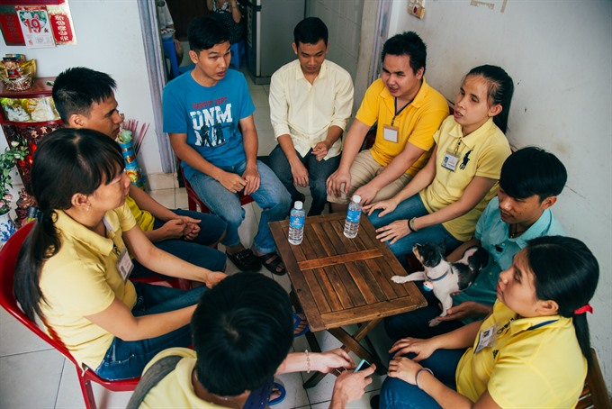
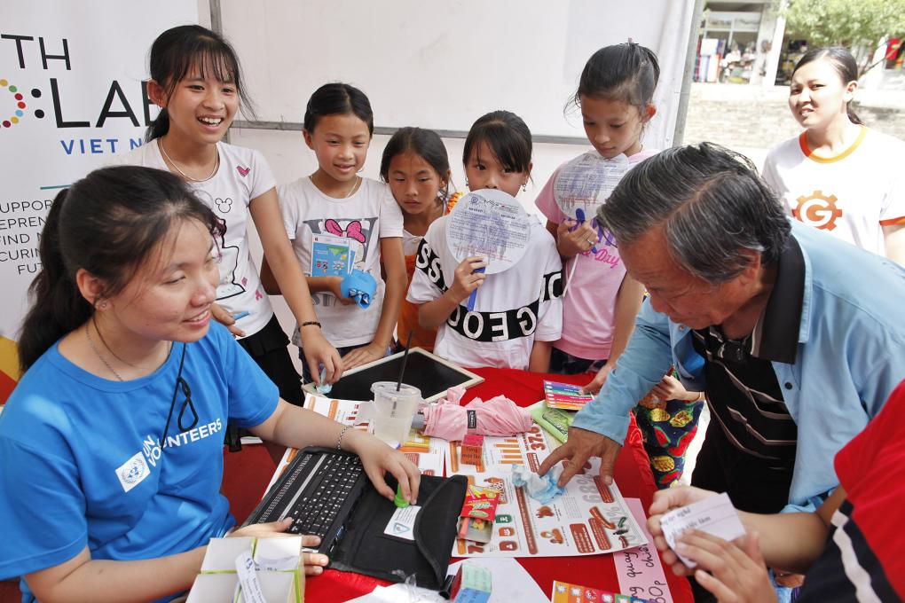
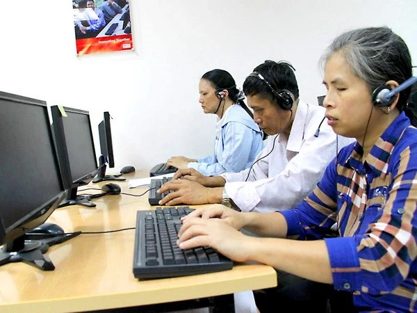
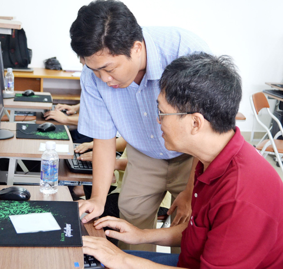

Đọc điều trước mắt
Từ tài liệu in đến một nhãn sản phẩm, thông tin cần đến được với người muốn đọc.
Một trang sách tự đọc. Một đồ vật tự tìm. SeeVia bắt đầu từ mong muốn giúp người khiếm thị có thêm sự chủ động trong những việc thường ngày.
Câu chuyện của chúng tôi
VÌ SAO CÓ SEEVIA
Đọc một tờ giấy, phân biệt đồ vật hay hiểu khung cảnh xung quanh đều cần thông tin. SeeVia hướng đến việc đưa những thông tin ấy thành lời nói, để người dùng có thêm cơ sở tự lựa chọn.
Từ tài liệu in đến một nhãn sản phẩm, thông tin cần đến được với người muốn đọc.
Một đồ vật hay mệnh giá tờ tiền có thể là bước nhỏ để chủ động hơn mỗi ngày.
Thêm thông tin về xung quanh, để quyết định vẫn thuộc về chính người dùng.
TỪ ĐỜI SỐNG THỰC TẾ
Theo câu chuyện trên UNDP, mẹ từng đọc tài liệu cho Đào Thu Hương vào buổi tối và sáng sớm. Năm lớp 10, chị có chiếc máy tính đầu tiên, giúp việc học và nộp bài thuận tiện hơn.
Đọc câu chuyện trên UNDP
Tư liệu UNDP ghi lại chị Thu Hương cùng trẻ em trong một chương trình năm 2021. Câu chuyện của chị cũng cho thấy công nghệ hỗ trợ việc đọc tài liệu, đặt xe và nhận biết tiền trong sinh hoạt.
Xem tư liệu UNDP

Một buổi hướng dẫn thao tác máy tính cho học viên khiếm thị.
Đọc câu chuyệnẢnh và câu chuyện là tư liệu tham khảo; các nhân vật không được giới thiệu là người dùng hay đối tác SeeVia.
HƯỚNG ĐI CỦA CHÚNG TÔI
SeeVia phát triển kính trợ lý thị giác kết hợp camera, AI và giọng nói, hướng đến tiếng Việt và những tình huống quen thuộc tại Việt Nam.
Tìm hiểu công nghệBắt đầu từ nhu cầu thực tế và hoàn thiện qua phản hồi của người dùng.
Camera chỉ kích hoạt theo yêu cầu; cách xử lý dữ liệu cần được làm rõ.
Kiểm chứng từng tính năng. Kính bổ sung thông tin, không thay thế gậy hay kỹ năng định hướng.
NHÓM SÁNG LẬP
Tên & vai trò đang cập nhật
Tên & vai trò đang cập nhật
Tên & vai trò đang cập nhật
Tên & vai trò đang cập nhật
Tên & vai trò đang cập nhật
Chia sẻ trải nghiệm hoặc đồng hành cùng dự án.